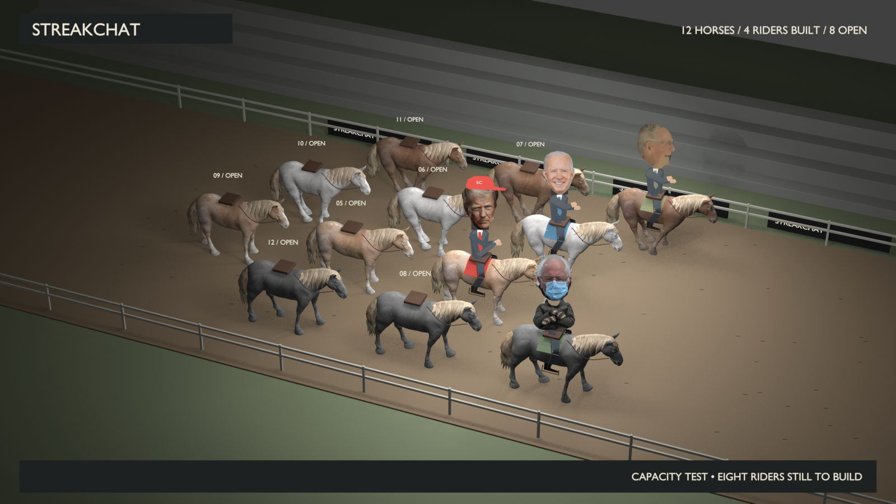

STREAKCHAT / LOCAL ART TEST
Four built. Twelve planned.
Bernie joins Trump, Biden and McConnell. Actual photo mittens, arms folded, letting the horse do the work.
Loading local preview…
A full field of 12 horses
Layout test: four finished riders and eight numbered open seats. Space is reserved for full-height photo heads. Those eight characters are still to be built.

There is no universal racing maximum. Twelve is our game target. Breeders’ Cup: 12 or 14 Kentucky Derby: 20
The mixed cast
Four are built. The other eight are proposals, each with a different visual joke. Strongest next picks: Snoop Dogg, Gordon Ramsay and Elon Musk.
Rough cutout parody, rendered locally in Blender. Existing recorded voices. No generated video or live-site changes.